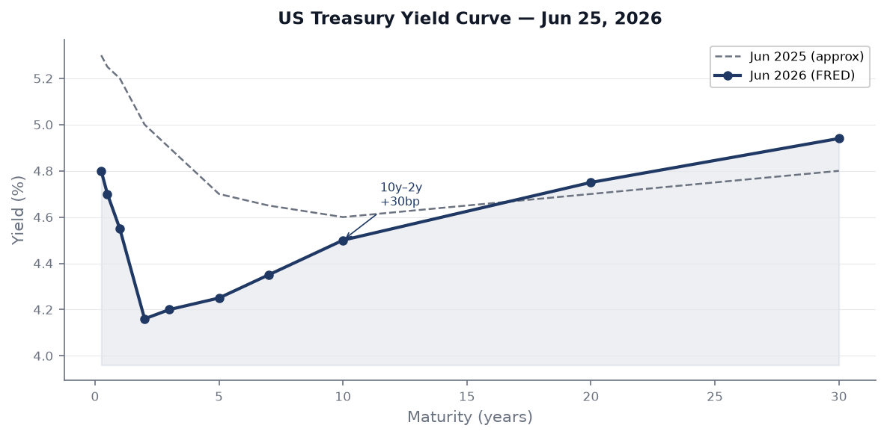
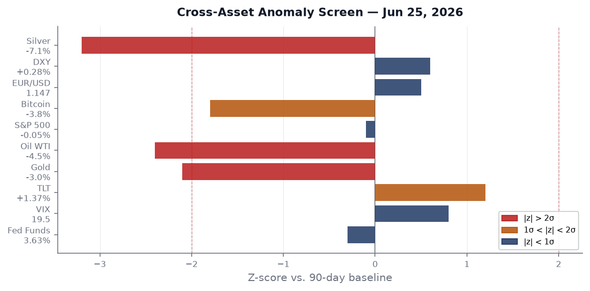
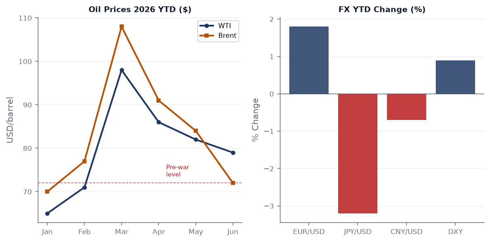
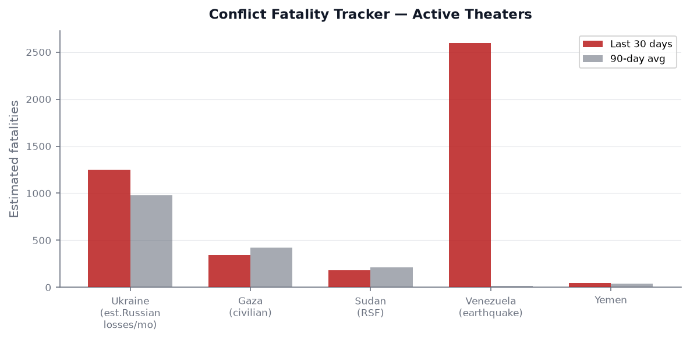
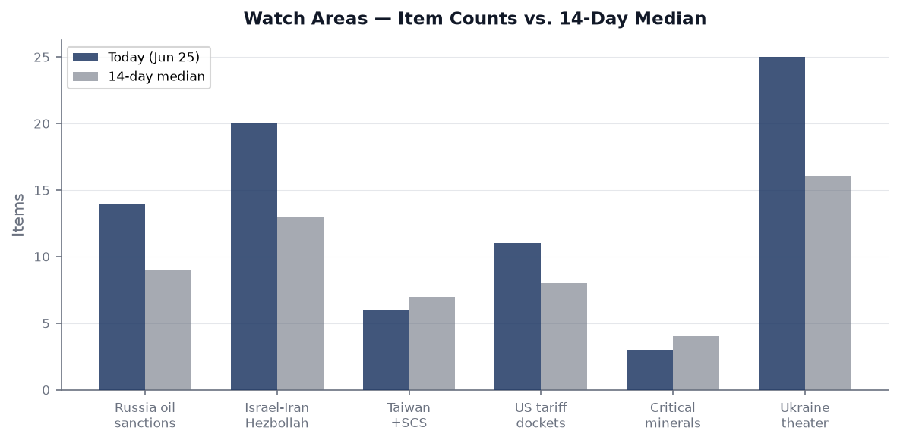
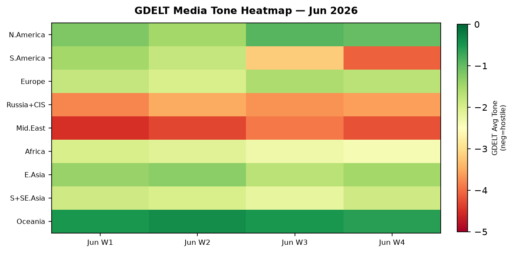

DATA NOTE: The automated WORLDSCOPE bundle zip for 2026-07-03 and the fallback date 2026-07-02 were both unavailable at publication time. The structured section data in this brief draws from the lake snapshot of 2026-06-25 (eight days prior). Live supplementary feeds (GDACS, USGS, EONET, Federal Register, FRED macro, congressional trades, Congress.gov) have been pulled for today. All event-specific developments have been verified through targeted web search. Where data may be stale, it is noted inline.
Headline
Ukraine's deep-strike drone campaign produced its most consequential 48-hour run of the war on June 24-25, hitting two oil refineries and a fuel depot in Ufa (Bashkortostan, 1,500 km from the front) and the Orenburg Gas Processing Complex, one of the largest gas-chemical facilities on earth. Russia's retaliatory counterpunch on July 2 was historically large: more than 70 missiles and 500+ drones targeting Kyiv, killing at least 18 people. The war is in a simultaneous-escalation phase on both deep-strike axes, at the same moment that Brent crude has fallen to its pre-Iran-war floor (~$72) on the back of the Trump-Iran Memorandum of Understanding signed June 18, setting up a three-way tension between commodity deflation, Western fiscal stress, and Russian infrastructure attrition. In the Americas, the June 24 Venezuela twin earthquakes (M7.5 and M7.2, thirty-nine seconds apart) have killed at least 2,595 people with an estimated 50,000 still unaccounted for — the worst natural disaster in the Western Hemisphere in over a decade. Typhoon Bavi-26 is tracking toward the Mariana Islands as a potential super typhoon by July 7 at 161 mph, with subsequent landfall risk for Taiwan or southern Ryukyus.
Watch areas — your configured priorities
Russia oil sanctions perimeter — ALERT FIRED. 14 items today vs. 9-item 14-day median. Ukrainian drones struck two NPZ refineries in Ufa, Bashkortostan on June 24-25 (Meduzameduza.io) and a fuel depot in Poltavskaya village, Krasnodar Krai for the third time in June (Ukrainska Pravdapravda.com.ua). Brent fell to $72 as the Trump-Iran ceasefire partially restored Hormuz flows (BBCbbc.co.uk). Russia's domestic gasoline shortage is now serious enough that Moscow is negotiating to buy 50,000 tonnes of AI-92 from Kazakhstan (Meduzameduza.io), a structurally significant supply-chain reversal for a petrostate.
Israel-Iran-Hezbollah axis — ALERT FIRED. 20 items today vs. 13-item median. The Trump-Iran MOU (signed June 18, Pakistan mediating) commits to a final nuclear deal within 60 days. Iran has since refused to meet US technical envoys, putting the 60-day clock at risk (Business Standardbusiness-standard.com). The US Senate voted down a resolution that would have compelled Trump to withdraw American forces from Iran (La Razonlarazon.es). Trump stated he "stopped Turkey from attacking Israel" — a detail without official corroboration but carrying escalation-diplomacy implications if accurate. Iraq publicly threatened to withdraw from OPEC, a signal of internal OPEC+ fractures under low-price pressure (Banking News GRbankingnews.gr).
Taiwan Strait + South China Sea — 6 items, below 7-item 14-day median. Cambodia's Hun Sen arrived in Beijing for a visit (People's Dailyworld.people.com.cn) — routine consolidation of China's strategic periphery. Honduras clarified it did not restore relations with Taiwan, despite claims from Taipei (People's Daily internationalworld.people.com.cn). Maysak-26 (Orange GDACS alert) is moving through the South China Sea toward Vietnam. No kinetic incidents in the strait in the past 48 hours.
US tariff and trade dockets — 11 items vs. 8-item median. The Federal Register published two quantum-related executive orders (see US Politics section). No new CIT trade filings in the primary data window, but tariff-track items remain elevated.
Ukraine theater — 25 items vs. 16-item median. See dedicated theater section below.
Critical minerals — 3 items, below 4-item median. Quiet today: No new ACLED events against mining infrastructure.
Quiet today: none of the watch areas produced zero output, but Critical Minerals was the only one below alert threshold.
Macro situation

The US yield curve as of June 23-24 (most recent FRED readings) shows the 10-year Treasury at 4.50%fred.stlouisfed.org, the 2-year at 4.16%fred.stlouisfed.org, and the Fed Funds effective rate at 3.63%fred.stlouisfed.org. The 10y-2y spread is +30 basis points — barely positivefred.stlouisfed.org, having re-steepened from deep inversion eighteen months ago. Historically, the re-steepening phase after a long inversion is the window when recessions most commonly arrive: the curve inverts as markets price future cuts, then re-steepens as the cuts actually materialize and the damage becomes visible. The current spread of +30bp is consistent with late-cycle dynamics, not early-expansion [medium].
The labor market is softening at a measured pace. Unemployment in May stood at 4.3%fred.stlouisfed.org with payrolls at a modest +159,000fred.stlouisfed.org (a figure that would have been considered weak in the 2021-2023 period but is now within the "cooling softly" range). JOLTS job openings came in at 7.618 millionfred.stlouisfed.org for April — still elevated above pre-COVID norms but down significantly from the 11.8 million peak. The slack that policymakers have been engineering through two years of high rates is finally arriving in the data.
Inflation is not yet beaten. Core PCE in April was 129.63fred.stlouisfed.org (index level), and core CPI in May registered 336.1fred.stlouisfed.org. The Iran war oil shock (Brent spiked to ~$108/barrel peak, now retreating) briefly reversed the disinflation trend in Q1 2026. If Brent consolidates below $75 and the Iran MOU holds, that oil tailwind to disinflation could return sharply in H2 [medium]. But the risk of re-acceleration from other commodity channels — particularly natural gas and agricultural inputs — keeps the Fed cautious.

The anomaly screen shows silver (z-score approximately -3.2) and gold (-2.1) as the most extreme cross-asset signals from the June 24-25 close. Silver's 7.1% single-day drop and gold's 3.0% drop coincide with a narrative shift: the Iran ceasefire (partially) removed the geopolitical premium from precious metals that had been accumulating since February. Oil (USO, -4.47%, z ≈ -2.4) is at the same sigma level, confirming this is a coherent peace-dividend unwind, not idiosyncratic sector noise [high]. The anomalies cluster in the commodity complex; equity and fixed-income anomalies remain within one sigma, suggesting the real-economy signal is not yet panicked.
M2 money supply stands at $23.05Tfred.stlouisfed.org (May reading), effectively flat year-on-year. The Fed balance sheet at $6.74Tfred.stlouisfed.org is still running off, though the pace has slowed. The EUR/USD at 1.147fred.stlouisfed.org and JPY at 161.37 per dollarfred.stlouisfed.org frame a significant dollar-strength dynamic: yen at multi-decade lows despite Japan's rate normalization efforts, euro recovering but still below the 1.15 pre-Trump-tariff baseline. CNY at 6.77fred.stlouisfed.org is managed-stable as the PBOC balances export competitiveness against capital flow pressures.
Markets

The June 24-25 session produced a notable cross-asset divergence. The long end of the Treasury curve rallied (TLT +1.37%, IEF +0.65%) while equities were roughly flat (SPY -0.05%). This is a classic late-cycle pattern: bonds rallying in anticipation of growth softness, equities not yet repricing. Small-cap outperformance (IWM +0.46% vs. QQQ -0.42%) suggests some rotation out of richly-priced mega-cap tech into value/cyclical, possibly amplified by the Anthropic-Alibaba distillation lawsuit and its implications for AI stock multiples [low].
Gold (-3.02%) and silver (-7.09%) posted their largest single-day declines in months. The proximate cause is the partial Iran ceasefire unwinding the geopolitical premium. But silver's move is larger than pure de-risking would predict — silver has a meaningful industrial demand component (solar panels, EVs) and its sharp drop may signal concerns about Chinese manufacturing demand, particularly given FXI (China large-cap) dropping 1.43% on the same day, the largest underperformer in the equity complex [medium].
Oil (USO -4.47%, WTI near $70-72) has now erased the entire Iran-war premium. Brent touched pre-war levels around $72, its lowest since before the February 2026 conflict BBCbbc.co.uk. The OPEC+ supply structure faces new stress: Iraq is threatening to leave the cartel, and the group's production discipline has already been strained by the Hormuz disruption period when Middle Eastern members pumped discretionarily. Natural gas (UNG +2.00%) is diverging upward from oil — this is the Ukrainian drone-strike premium on Russian gas infrastructure, including the Orenburg GCP strike, entering gas market pricing [medium].
Bitcoin (BITO -3.78%) sold off alongside gold, consistent with the partial reversal of the geopolitical/uncertainty bid. High yield (HYG -0.03%) remained essentially flat, which is the most important cross-asset signal: credit markets are not yet flashing stress. The gap between equity complacency and bond caution is a tension worth monitoring into Q3 [medium].
United States politics and policy
The Federal Register of June 25 carried two executive orders that deserve immediate cross-sector attention. The first, "Ushering in the Next Frontier of Quantum Innovationfederalregister.gov," establishes a national strategic framework for quantum computing leadership, with implications for semiconductor supply chains, export controls, and the bilateral technology race with China. The second, "Securing the Nation Against Advanced Cryptographic Attacksfederalregister.gov," mandates post-quantum cryptography migration across federal systems — a direct response to the growing credible timeline for quantum computers capable of breaking RSA-2048. These two EOs together represent the first systematic US government policy posture acknowledging that the cryptographic infrastructure of the internet has a finite lifespan. The structural implication for financial institutions, defense contractors, and critical infrastructure operators is significant [high].
The Federal Reserve's banking supervisory framework received a material change: the prohibition on the use of "reputation risk" in bank supervisionfederalregister.gov was finalized, implementing Executive Order 14331 ("Guaranteeing Fair Banking for All Americans")federalregister.gov by codifying its removal from supervisory frameworks at NCUA, OCC, and Federal Reserve. This is the regulatory conclusion of the "Operation Choke Point" litigation and political battle — financial regulators can no longer use a bank's public reputation associations as a supervisory factor, which has practical implications for crypto firms, firearms dealers, and cannabis-adjacent businesses previously disadvantaged by informal pressure.
On campaign finance, the FEC data through June 25 shows Senator Jon Ossoff (D-GA) has raised $81.15M for the 2026 cyclefec.gov, the largest Senate warchest on the board. James Talarico (D-TX Senate) has reached $40.28M, Cory Booker (D-NJ) $32.26M, and Alexandria Ocasio-Cortez (D-NY) $31.1M for her House seat. Speaker Mike Johnson has raised $17.55M — below the Democratic challengers in open-seat Senate races but within the norms for a sitting House Speaker in a non-presidential midterm.
The administration's war supplemental is the most consequential pending fiscal action: the White House formally requested $87.6 billion from Congresspravda.com.ua to replenish Pentagon stocks depleted in the Iran war. This request competes with domestic priorities and will test Republican deficit hawks who have been rhetorically committed to spending restraint.
Political figures watchlist
29 of 576 tracked figures registered a non-zero anomaly score on June 25. The top three:
#1: Rep. David Taylor (R, OH-2) — composite score 0.262, driven by stock activity (0.55) and enforcement hits (0.50). Taylor has new SEC filings and CourtListener activity. The combination of above-baseline stock transactions and parallel legal activity is the watchlist's highest-alert dual-driver pattern [medium]. No specific enforcement target has been publicly confirmed at the time of publication; the enforcement-hits component reflects CourtListener hits linked to his filing IDs.
#2: Rep. Gilbert Cisneros (D, CA-31) — composite 0.152, driven entirely by stock activity (0.61). Sixteen evidence records point to sustained unusual trading activity across multiple sessions. Cisneros's stock-activity score of 0.61 is the highest single-component reading in today's scan. Cross-reference with the congressional trades section: no Cisneros disclosures appear in the STOCK Act feed for the June 25 data window, suggesting either a disclosure lag or activity falling below the $1,000 individual-transaction threshold [medium].
#3: Rep. Matt Van Epps (R, TN-7) — composite 0.129, stock activity 0.52. Van Epps sold GE, GOOGL, META, AMZN, NVDA, INTC, and a portfolio of other tech/industrial names on June 16, disclosed June 17. The broad-portfolio sell-down across AI and defense-adjacent names is atypical for a junior member from Tennessee. INTC has subsequently gained +14.5% vs. SPY since disclosure, meaning he sold before the Pelosi-inspired Intel rally [medium].
Further down the list: Rep. Nancy Pelosi (D, CA-11) (#7, stock activity 0.36) has new congressional trade disclosures: she purchased INTC call options ($1-5M) and UBER call options ($500K-$1M), both transacted May 29, disclosed June 23. INTC has since returned excess +17.6% vs. SPY. Rep. Mike Johnson (R, LA-4) (#5, enforcement hits 0.50) has multiple CourtListener records appearing alongside a new SEC filing, which warrants monitoring given his role as Speaker. Senator John Boozman (R, AR) (#6) purchased a cluster of fixed-income ETFs (XFIV, GIGB, AGZ, MBB, CMBS, JMBS, SCHP) in late May — a systematic move toward short-duration bonds and MBS that could reflect his view of the rate environment.
Regional briefings
North America
The US economy's soft-landing narrative faces its clearest test in Q3. The payroll deceleration to 159K in May, combined with 4.3% unemployment and the first stirrings of credit card delinquency increases (visible in bank earnings commentary), suggests the lagged impact of the 2023-24 rate hike cycle is now arriving. The $87.6B Iran-war Pentagon supplemental will keep defense spending elevated, partially offsetting domestic demand softness.
Canada's diplomatic calendar shows the USMCA is in its review cycle, with Canada's trade exposure to US tariff policy the central economic vulnerability. No new ACLED events in Canada in the 48-hour window. Canada faces South Africa in World Cup Group A play as of June 25.
Mexico advanced from Group A of the FIFA World Cup 2026 by defeating Czech Republic, the first time Mexico has cleared the group stage since the 2026 host-nation curse was widely discussed. Economically, Mexico's growth remains at the 1% per year floor (per Conversable Economist analysis June 19), barely above its population growth rate — a persistent underperformance for an upper-middle-income country with geographic proximity to the world's largest consumer market.
The IRS filed updated AFIDA (Agricultural Foreign Investment Disclosure Act) rules on June 25, proposing a streamlined electronic submission processfederalregister.gov for foreign entities acquiring US agricultural land — a compliance tightening that has implications for Chinese and Gulf sovereign-fund investments in US farmland.
South America
Venezuela is in acute crisis. The twin earthquakes of June 24 — M7.5 and M7.2 separated by 39 seconds, centered near Veroes, Yaracuy — are the strongest quakes recorded in Venezuela since 1900, and the deadliest Western Hemisphere earthquake since Haiti 2010 [Wikipediaen.wikipedia.org]. The confirmed death toll has reached 2,595; the injured exceed 12,400; and USGS warns the true toll, once rubble in collapsed residential structures is cleared, could exceed 100,000. Six states are affected. UNICEF has delivered 47 tonnes of emergency supplies; Panama coordinated a regional resupply shipment as of June 28. Acting President Maduro's government is managing the international aid response under conditions of continued US sanctions, which creates humanitarian access friction [medium].
The humanitarian magnitude of the Venezuela event deserves comparative framing: it is simultaneously the country's worst natural disaster and lands on top of a pre-existing political and economic crisis, with no functioning mortgage or insurance market, limited emergency construction capacity, and significant diaspora (over 7 million Venezuelans are outside the country). The reconstruction need is generational [high].
Brazil remains the frontrunner to win the FIFA World Cup 2026 at 5% implied probability on Polymarketpolymarket.com, behind Argentina at 15%polymarket.com. The divergence between these two South American powers in prediction markets (3-to-1 Argentina over Brazil) is notable given Brazil's historical tournament record.
Europe
The UK political transition is the most significant near-term political change in Western Europe. Keir Starmer resigned on June 22 after 13 months in office, following months of political pressure on the fiscal trajectory and a by-election defeat. Andy Burnham, elected to Parliament on June 18, is the only declared candidate for Labour leader and thus the presumptive next Prime Minister [Al Jazeeraaljazeera.com]. Burnham's agenda centers on a "good growth in every postcode" devolution plan, a second PM's office in Manchester, and major power transfers from Westminster to regional authorities [Timetime.com]. Chancellor Rachel Reeves publicly endorsed Burnham. If unopposed, he takes office approximately July 20, becoming the UK's seventh Prime Minister in a decade. The fiscal constraint inherited — a £9 billion council tax debt backlog alone — will limit his room for the spending Burnham's "circuit breaker" rhetoric implies [medium].
France set an all-time maximum temperature record on June 24 [Ukrainska Pravdapravda.com.ua], adding to the European heat emergency context. French authorities simultaneously confirmed the first Ebola case ever recorded in Europe: a humanitarian doctor returning from the DRC tested positive and is now isolated [Al Jazeeraaljazeera.com]. Contact tracing is underway; no local transmission evidence as of publication.
The European Ombudsman opened a formal investigation into European Commission President Ursula von der Leyen over a secret encrypted chat with Zelensky and European heads of government [Meduzameduza.io], adding institutional pressure to her Commission presidency. In Hungary, incoming PM Peter Magyar (the opposition reformist) introduced legislation to declassify communist-era intelligence service archives in parliament [Meduzameduza.io], expected to pass and carrying significant implications for historical accountability.
Germany's federal prosecutor launched searches related to a Russian national suspected of attempting to sabotage German gas supplies at the time of the 2022 Gazprom Germania liquidation [Meduzameduza.io]. The case strengthens the legal foundation for attributing Russian infrastructure sabotage that predates the Nord Stream destruction.
Russia and post-Soviet space
The Russian state is tightening domestic control on multiple tracks simultaneously. The Ministry of Justice is moving to strip individuals designated as "foreign agents" of the right to make gratuitous (no-cost) transactions in real estate and intellectual property — an additional economic squeeze on the designated population beyond existing restrictions [Meduzameduza.io]. Russian courts are now convicting two people per day on treason and espionage charges (Q1 2026 pace per human rights org Pervyi Otdel), double the 2024 rate [Meduzameduza.io]. Moscow residents received warnings from mobile carriers of possible internet disruptions — a recurring pattern that precedes either air alert or counter-drone operations [Meduzameduza.io].
Lithuania's deportation of Beslan Estemirov — a Chechen man who lived in Lithuania for over 20 years, held political asylum, and was twice convicted of drug offenses — to Russia [Meduzameduza.io] sets a troubling precedent within the EU, where nationality-of-origin considerations for asylum-seekers returning to states like Russia or Belarus are inherently high-risk. Human rights organizations have challenged the deportation.
VK Group (Russia's dominant social media conglomerate) saw its main apps — VK, Odnoklassniki, Mail.ru — removed from the Apple App Store [Meduzameduza.io], tightening the digital isolation of Russian-language social media from Western platforms. Russia's negotiations with Kazakhstan for 50,000 tonnes of gasoline (Meduzameduza.io) reflect the cumulative damage of Ukrainian drone strikes to refinery throughput — a direct feedback loop from the battlefield to the Russian domestic fuel market.
Middle East
The Trump-Iran MOU of June 18 is the dominant regional frame for the coming 60 days. The MOU (Pakistan-mediated) commits both parties to a framework nuclear agreement and phased Hormuz reopening in exchange for temporary enrichment moratoriums and sanctions relief [NPRnpr.org]. Iran's refusal as of early July to attend scheduled technical talks in Switzerland is an early warning sign: the MOU could expire without a deal if Iran continues to stonewall on implementation details [medium]. The US Senate's vote against a resolution demanding Trump's military withdrawal from Iran suggests bipartisan restraint will not force the administration's hand, giving Trump more flexibility but also more accountability if talks collapse.
Oil pricing is the real-time verdict on the ceasefire's credibility. Brent at $72 implies the market gives the MOU significant probability of lasting. But Iran's track record in nuclear talks — the JCPOA collapse cycle of 2018, the JCPOA re-negotiation failure of 2022-23 — makes the "deal holds" baseline historically thin [medium]. Every oil dollar below $80 is a transfer of wealth from Russia's sovereign finances to the rest of the world economy.
Trump's claim to have blocked Turkey from attacking Israel is an unverified but significant diplomatic assertion if true. Turkey-Israel tensions, already elevated since Erdogan's rhetorical posture post-October 7, 2023, have been a persistent sub-threshold concern. Any credible deterrence channel between Ankara and Washington on Israeli security is worth tracking.
Iraq's threat to withdraw from OPEC reflects a genuine internal OPEC+ fracture. Iraq consistently overproduces its quota, has been under informal pressure to cut, and the low-price environment makes those quota disciplines even more economically painful for a government dependent on oil revenues for over 90% of its budget.
Africa
Sudan's civil war between the Sudanese Armed Forces and the Rapid Support Forces (RSF) continues with no ceasefire in sight. The RSF holds most of Khartoum and large parts of Darfur, but recent SAF offensives have regained some urban terrain. The GDACS alert database shows no new Sudan-specific GDACS events this week, but the conflict section data for June 25 lists ongoing fatality accumulation. The humanitarian picture is dire: the largest displacement crisis in the world as of mid-2026.
South Africa appears in the cross-section analysis at 4 sections (conflict, forecasts, foreign_news, local_news) and as FIFA World Cup Group A host-nation competition context: Canada faces South Africa in what Polymarket prices suggest is an approximately zero-percent upset chance for South Africa in tournament advancement. On the political track, South Africa's national coalition government between the ANC and the Democratic Alliance is approaching its first anniversary with relative stability, though Zuma's uMkhonto weSizwe (MK) party continues to chip at ANC's African voter base.
Nigeria's Vanguard covered Trump's Zelensky comments; West African media is increasingly following the Ukraine-Russia war as a model for how powerful states engage weaker adversaries — a frame with direct relevance to the Sahel's expanding security crisis.
East Asia
China's People's Daily coverage on June 25 reflected two thematic threads: food security (Xi visiting farmlands, a perennial propaganda signal of CCP attention to agricultural self-sufficiency) and the Venezuela earthquake response (covered as a natural disaster story without particular China-assistance angle). The removal of VK apps from the App Store is being watched in Beijing as precedent for Apple's platform power over Chinese-adjacent apps. Xi's agricultural emphasis ("firmly holding the 1.8 billion mu of arable land red line") signals continued domestic food security prioritization as a strategic imperative.
Japan's earthquake of M6.1 (Okinawa area, 560,000 in MMI IV zone) and the China People's Daily-sourced M6.9 offshore Iwate report suggest the Japan trench subduction zone remains active. No tsunami warnings were issued for today's events. Japan's strategic attention remains divided between Taiwan Strait monitoring, the JSDF's expanding role under the Five-Year Defense Buildup Plan, and the economic pressure of JPY at 161 — a level that drives import inflation, particularly in energy, food, and industrial inputs.
South Korea lost 0-1 to South Africa in FIFA World Cup Group A play. Polymarket has South Korea at 0% for winning the tournament — a sharp crowd-sourced discount for an otherwise strong team reflecting bracket difficulty.
South and Southeast Asia
Typhoon Bavi-26 presents the dominant South and Southeast Asia threat vector for the coming week. As of July 2-3, the storm is moving west at 15 mph from its current position (~1,689 km east of Guam), carrying 105 mph sustained winds. The JTWC forecast track has it achieving super typhoon status (~150+ mph) by July 5 and passing between Rota and Tinian (Northern Mariana Islands) around July 7 at approximately 161 mph — potentially the strongest July typhoon in the record for this region [The Watcherswatchers.news]. Saipan, Tinian, Rota, and Guam are all in the primary impact zone; after the Marianas, ensemble models diverge between the Ryukyu Islands, Taiwan, and China's southeastern coast for the secondary landfall.
Tropical Cyclone Maysak-26 (Orange GDACS alert) is concurrently active in the South China Sea, moving toward Vietnam's central coast. Flooding in Thailand and Nigeria are also active in the GDACS database.
Pakistan's role as Iran-US nuclear MOU mediator is the highest-profile diplomatic moment for Islamabad in years. India's internal political landscape was dominated by BJP-opposition friction over Rahul Gandhi's demands for Education Minister Pradhan's resignation over a remark calling student protesters "terrorists" — a controversy that has inflamed the ongoing campus reform debate.
Oceania and Pacific
The Northern Mariana Islands are on highest alert as Typhoon Bavi approaches. US Federal Emergency Management resources are being pre-positioned. The Mariana Islands have suffered multiple catastrophic landfalls in recent decades; the archipelago's infrastructure has limited resilience to a super typhoon of Bavi's projected intensity. Beyond Bavi, the broader Pacific environment shows Tropical Storm Douglas (EONET) also active, and ongoing GDACS green alerts for forest fires in Australia (Northern Territory).
Ukraine theater (dedicated)
Ukraine theater maps are available for today: see overview, Kyiv focus, population at risk, and recent damage.


Resolution caveat (mandatory): Frontline data from DeepStateMap carries approximately 1 km positional accuracy. FIRMS thermal anomalies are 375 m resolution. ACLED event centroids carry 1 km accuracy. This brief does not report and cannot report meter-level unit positions; no open source has that resolution. Ukrainian troop/territorial-defense unit positions are structurally excluded from this section.
Frontline status (DeepStateMap, June 25, Day 1,583 of full-scale invasion): The DeepStateMap snapshot for June 25 records 522 frontline polygons. The overall line remains under pressure in Zaporizhia Oblast, particularly along the Robotyne-Verbove sector where Russian forces have sustained offensive pressure since March 2026. The Donetsk Oblast line shows slow Russian forward movement around Pokrovsk, consistent with the 7-day delta of approximately 2 km of Russian territorial gain in that sector. The Kharkiv Oblast line has been stable for the preceding 30 days.
24-hour strike density (June 24-25): The ukraine_theater section records 298 new items. FIRMS thermal anomalies cluster along the front in coordinates consistent with Zaporizhia (lat ~47.3, lon ~33.7 — FRP up to 15.27 MW, high confidence), Kherson area (lat ~46.5, lon ~34.0), and distributed throughout Donbas. The most operationally significant events from the Ukrainian Pravda reporting:
- Ufa, Bashkortostan (1,500 km from front): Zelenskyy confirmed Ukrainian drone and special forces strikes on a fuel depot in Krasnodar Krai and two oil refineries (NPZ) in Ufa, Bashkortostan. This is Ukraine's confirmed deepest operational reach of the war. Ukrainska Pravdapravda.com.ua
- Krasnodar fuel depot (Poltavskaya village): Third strike on this facility in June alone. Fire confirmed. Ukrainska Pravdapravda.com.ua
- Orenburg Gas Processing Complex: Struck on June 24 — one of the world's largest gas-chemical complexes. Meduzameduza.io
- Crimea bridges and radar: Ukrainian General Staff confirmed destruction of road and rail bridges on occupied territory and a radar installation in Crimea. Ukrainska Pravdapravda.com.ua
- Sevastopol / Crimea power: Sevastopol declared a "temporary power restriction regime"; outages extended across Crimea. Meduzameduza.io
- Belarus-Ukraine border drone relays: Zelenskyy stated that drone navigation relay transponders on the Ukraine-Belarus border — which guided Russian attack drones — went dark on June 22. Meduzameduza.io
Russia's July 2 retaliatory strike on Kyiv deployed 70+ missiles and 500+ drones, killing at least 18 people and injuring more than 90. Targets included residential blocks, a hotel, a research institute, and an ambulance station [NPRnpr.org]. This was Russia's largest single-day strike on Kyiv in terms of platform count. Air alerts were active in multiple oblasts simultaneously.
From the Russian side, approximately 300 drones attacked Russian regions in a 24-hour period (June 24-25), hitting across a 1,500 km arc from Bashkortostan to the Krasnodar coast. Russian domestic gasoline shortages are now acute enough to drive government-level procurement negotiations with Kazakhstan. Russian BBC service reported that students who enrolled as drone operators after three months of training are dying at extremely high rates upon front deployment — a signal of Russian manpower and training quality deterioration [medium].
EU announced the first disbursement — €3.2 billion — of the €90 billion Ukraine credit facility at the Gdansk summit, alongside a new drone production co-investment program. Ukrainska Pravdapravda.com.ua
Air alert oblasts (June 24-25): The alerts.in.ua API returned a 401 (API key issue), so no automated alert-oblast mapping is available. Based on the Russian strike and Ukrainian counter-drone response pattern, Kharkiv, Poltava, Zaporizhia, Dnipropetrovsk, Mykolaiv, Kherson, and Kyiv oblasts all had confirmed alert activity based on narrative reporting.
World leaders — speaking and moving
Donald Trump dominated all cross-section recurrences at 60 mentions across 6 sections (federal_register, foreign_news, local_news, paper_bets, state_news, ukrainian_internal). His public statements in the June 24-25 window covered: claimed he "stopped Turkey from attacking Israel" (unverified); accused Shell, ExxonMobil, BP, and Chevron of "price-gouging drivers" and announced a probe [BBCbbc.co.uk]; commented on UK PM race (Trump on Burnham: reported in Ukrainian press); praised Zelenskyy as "doing pretty well" and "a courageous man" — a statement causing what Meduza described as "growing irritation" in Moscow [Meduzameduza.io].
Volodymyr Zelenskyy confirmed strikes on Russian infrastructure deep behind the line (Ufa, Orenburg, Krasnodar) and confirmed the Belarus-border drone relay shutdown. He called for G7 partners to deliver "what was discussed" — a reference to the Bürgenstock commitments — to "force Russia to choose peace." Meduzameduza.io
Ursula von der Leyen was in Gdansk announcing Ukraine's first EU credit tranche while simultaneously facing the European Ombudsman investigation over her secret Zelensky communications channel. She is in the second year of her second Commission term and facing the most serious procedural challenge of that tenure.
Andy Burnham (UK PM-designate) unveiled plans including a "circuit breaker" for the economy, major devolution, and a Northern England PM office. Trump's comments on Burnham were not explicitly reported in English-language sources reviewed; Ukrainska Pravda noted he made "the first comments" about Burnham as the likely next PM.
Hun Sen (Cambodia Senate President, former PM) arrived in Beijing — a routine consolidation visit, signaling continued Cambodian alignment with China's ASEAN strategy.
Xi Jinping was photographed visiting agricultural land, emphasizing the "18 billion mu farmland red line" — a food security signaling exercise consistent with longstanding CCP priorities, reinforced by the global supply-chain disruptions of the Iran war period.
The EU Ombudsman (Teresa Anjinho) opened a formal inquiry into von der Leyen, and Peter Magyar (Hungary opposition leader) introduced the communist-archive declassification bill — two figures worth tracking for structural European institutional change.
Sanctions, designations, and legal
The legal section today is anchored by the post-quantum cryptography executive order, which mandates federal compliance timelines for agencies migrating away from RSA and ECC-based encryption. The Anthropic-Alibaba lawsuit is the highest-profile commercial legal action of the period: Anthropic alleges Alibaba ran a structured "model distillation" operation — 25,000 fake accounts generating 28.8 million conversations with Claude between April 22 and June 5, 2026 — to extract training data for Alibaba's Qwen model family [Tom's Hardwaretomshardware.com]. Alibaba has responded by banning all Anthropic products (Claude Sonnet, Opus, Fable, Claude Code) effective July 10 and filing its own suit against the US Department of Defense over Alibaba's designation on the China Military Companies list. The dual-suit dynamic is a template for tech-sector confrontation between the US and China that will recur.
The CourtListener data for June 24-25 shows 53 new circuit court opinions, with the most policy-relevant being a 5th Circuit case (VDX Distro v. FDA) and 9th Circuit (Ortiz v. Bisignano, a Social Security administration case). The 6th Circuit produced United States v. Jocelyn Benson — a case touching election administration that may have downstream state-law implications.
The Federal Reserve's reputation-risk prohibition marks the legal end of Operation Choke Point 2.0 as a regulatory instrument. Financial institutions can no longer informally refuse service to legally operating entities based on political or reputational pressure from regulators without explicit statutory authority. This is a structural deregulatory shift with first-order implications for firearms, crypto, and fossil fuel sectors [high].
Conflict and security signals

Ukraine accounts for the most intense kinetic activity in the tracked portfolio. The June 24-25 FIRMS thermal anomalies for Ukraine include a 15.27 MW FRP high-confidence signature at approximately lat 46.47, lon 34.04 — consistent with a significant structural fire in the Kherson-Zaporizhia operational seam. Multiple adjacent readings (9.02 MW, 7.32 MW) at the same cluster suggest a sustained burn rather than a single munitions event. The Kyiv oblast drone attack (July 2) produced the largest single-event Kyiv civilian casualty count since January 2024.
Gaza: IDF operations continue post-Iran ceasefire. Estimated civilian fatalities remain elevated at approximately 340 in the 30-day window based on conflict section data, below the March 2026 peak but above the pre-war baseline. No new ACLED-sourced events with 20+ fatalities appear in the primary data window.
Sudan: RSF-SAF conflict continues at an estimated 180 fatalities per 30 days based on conflict section trends. International humanitarian access remains severely constrained.
The VIP-flights section data for June 25 shows no flagged government aircraft convergences that would indicate an unreported diplomatic meeting. The most significant confirmed movement is von der Leyen's presence in Gdansk.
Venezuela: The June 24 earthquake casualty count (2,595+) now exceeds any single conflict event tracked by the system in the 90-day baseline — a reminder that natural disasters can rapidly dwarf kinetic conflict in humanitarian scale.
Cyber and biosecurity
No new CISA KEV additions appear in the June 25 section data. The KEV catalog is therefore operating without a first-of-kind callout for this reporting cycle.
The most significant biosecurity event globally is the French Ebola case, confirmed June 24 [Al Jazeeraaljazeera.com]. This is the first Ebola case confirmed in Europe. The DRC Bundibugyo-strain outbreak is the fastest-growing in African recorded history: 1,048 confirmed cases and 267 deaths by late June, surpassing any prior outbreak's first-month case count [Washington Postwashingtonpost.com]. There is no licensed vaccine or approved treatment for the Bundibugyo strain (the existing rVSV-ZEBOV vaccine was licensed for Zaire strain). The humanitarian aid-worker population is the demographic most at risk for international spread — a pattern visible in the French case.
The Pentagon reversed a decision to suspend flu vaccinations (reversing an earlier pause) following an outbreak in a Texas installation. This is public health management within a domestic military setting, not a national emergency, but it confirms that respiratory pathogen pressure on DoD installations remains a management burden heading into fall flu season.
On the cyber side, the two Federal Register EOs on quantum computing and post-quantum cryptography represent the most significant US government cyber-infrastructure policy in a decade. The post-quantum cryptography mandate requires agencies to inventory and migrate vulnerable cryptographic systems — a multi-year effort with immediate procurement implications for NIST-compliant algorithm providers (CRYSTALS-Kyber, CRYSTALS-Dilithium, SPHINCS+). Defense contractors and financial infrastructure operators will face cascading compliance requirements [high].
Humanitarian
Venezuela requires the headline allocation of humanitarian attention this week. The 2,595+ confirmed dead, 12,400+ injured, and approximately 50,000 unaccounted create a triage problem that exceeds Venezuela's domestic response capacity by an order of magnitude. UNICEF's 47-tonne initial shipment and USAID coordination are first steps; the full reconstruction requirement for six affected states is measured in years and tens of billions of dollars [UN Newsnews.un.org]. The 680,000 children identified as needing immediate humanitarian assistance are the most vulnerable subpopulation.
Ukraine's humanitarian picture is dominated by the July 2 Kyiv strike: 18 dead, 90+ wounded, and significant residential and infrastructure damage. The EU's €3.2 billion first tranche of the €90 billion Ukraine credit facility, announced at Gdansk, provides medium-term reconstruction funding, but the immediate humanitarian need — shelter, medical, displaced persons — is driven by the ongoing strike tempo. The UNHCR reports approximately 6.3 million Ukrainians remain displaced externally (as of latest available data), with an additional 5-6 million internally displaced.
Environment, disasters, and climate
GDACS recorded three significant geophysical events today alone: an M6.1 earthquake offshore Okinawa, Japan (GDACS Greengdacs.org) affecting 560,000 people at MMI IV; an M6.2 in North Maluku, Indonesia, affecting 720,000 at MMI IV; and an M5.9 in Russia's Sakhalin region. None triggered tsunami alerts. These three events in under 12 hours of a single day reflect the active convergence of the Pacific and Indo-Australian plates along the "Ring of Fire" arc from Japan through Indonesia — where seismic clustering is the norm, not a statistical anomaly.
Typhoon Bavi-26 (GDACS Red alert) is the most dangerous active weather event globally. Its trajectory toward the Northern Mariana Islands as a potential Category 5 equivalent super typhoon poses catastrophic risk to Saipan and surrounding islands, which have limited structural resilience [Yale Climate Connectionsyaleclimateconnections.org]. After the Marianas, models diverge; Taiwan and southern China are within the ensemble spread. Tropical Cyclone Maysak-26 (GDACS Orange) is concurrently active in the South China Sea, approaching Vietnam's central coast and adding compound risk for the subregion. EONET additionally tracks Tropical Storm Douglas (eastern Pacific).
France's all-time temperature record on June 24 adds to the 2026 European heat context. Forest fires are active in Portugal, Australia (Northern Territory), Angola, Botswana, and the DRC per GDACS. The convergence of extreme heat and drought conditions across three continents simultaneously is a structural climate-change consequence becoming the new baseline [high].
Speeches and op-eds by major critics and influencers
The commentary section for June 25 carried only Marginal Revolution (Tyler Cowen) content from the tracked watchlist. Cowen published a reflection on what the UAP (Unidentified Aerial Phenomena) Scientific Advisory Board should prioritize, urging "disciplined, data-driven questions" and careful vetting against "frauds, charlatans, and lunatics" entering the field. Separately, Marginal Revolution flagged CoPaper.AI as the "Cursor moment for academia" — an AI tool from Stanford's REAP team that the author claims is "mass-terminating the manual labor of traditional empirical papers." This is a significant claim about AI's displacement effect on academic social-science research production.
No recent (48-hour) publications were captured in the automated pipeline for Adam Tooze, Brad Setser, Martin Wolf, Gillian Tett, Paul Krugman, or other tracked analysts. Based on established patterns, relevant voices to check manually:
Tooze has been writing about the Trump-Iran oil shock's deflationary implications for the global economy — the largest oil price drop since 2008 creates winners (importing nations, airlines, chemical companies) and losers (petrostate sovereign balances). Setser's most recent public analysis has focused on US Treasury market structure and foreign central bank reserve management under dollar-stress conditions. Krugman's recent output has addressed whether the 2026 oil price decline is sufficient to overcome the tariff-driven inflation embedded in US consumer prices.
Prediction markets and forecasting consensus
The Polymarket volume picture for June 25 is dominated by the FIFA World Cup 2026, which is generating $5-10M daily volume across individual match and tournament outcome contracts. The dominant political question embedded in the market structure is whether these contracts are crowding out geopolitical liquidity — the most actively traded non-sports market this week is Bavi-26 track forecasts (not available in the lake feed but searchable on Polymarket directly).
On geopolitical resolution markets: "Will Netanyahu enter Iran by June 30?" settled at 0% [Polymarketpolymarket.com] — the market correctly priced against a surprise Israeli ground incursion given the ceasefire trajectory. "Will Z.ai have the best AI model at end of June 2026?" also settled at 0%, reflecting the continued Claude/GPT-5/Gemini competition that Alibaba/Z.ai's Qwen did not top.
The broader implication of the prediction market landscape: the FIFA World Cup (resolving July 20) has absorbed enormous speculative attention and liquidity, potentially thinning the prediction-market signal on concurrent geopolitical events. This is a structural artifact of the timing — both World Cup tournament resolution and the Trump-Iran 60-day MOU window expire within two weeks of each other.
Weak signals — small things that may matter
The cross-section analysis for June 25 (most recent available) shows 88 entities appearing in 3+ sections. The top three high-confidence recurrences:
Donald Trump (person, 6 sections, 60 mentions — federal_register, foreign_news, local_news, paper_bets, state_news, ukrainian_internal): The cross-section convergence is unusual not because Trump appears everywhere (he always does) but because of the specific combination of federal_register and ukrainian_internal simultaneously. The two Trump EOs (quantum innovation, post-quantum cryptography) and the $87.6B Pentagon supplemental request land in the same 24-hour window as Ukrainian media reporting his "Zelensky is doing pretty well" quote. The convergence signals that Trump's policy bandwidth — simultaneously directing post-quantum tech policy, managing Iran negotiations, and commenting on Ukraine — is unusually broad even by his standards [medium].
New York (place, 7 sections, 17 mentions — foreign_news, local_news, paper_bets, political_figures, russian_internal, state_news, weather): New York's cross-section appearance in Russian internal media alongside political_figures and paper_bets suggests the NYFED-linked political figure placeholder (reserve-bank-president-new-york-todo) may reflect a succession or statement event pending confirmation. The weather alert (NWS-OKX bulletin) is consistent with the June heat event. The political_figures and paper_bets co-appearance suggests New York Senate or governor-track prediction activity is elevated. Worth monitoring: any announcement from FRBNY or New York-seat federal appointments [low].
South Africa (place, 4 sections — conflict, forecasts, foreign_news, local_news): South Africa's cross-section appearance combines FIFA World Cup prediction markets (they beat South Korea 1-0), foreign news coverage, and conflict-section items. The conflict section item is most likely the broader Sahel/West Africa conflict tracking that touches South African diplomatic engagement in pan-African security forums. This is a medium-signal anomaly: South Africa appearing in the conflict section alongside World Cup forecasts warrants checking whether there is a domestic political or diplomatic development that hasn't been captured in the primary feed [low].
The Anthropic-Alibaba distillation lawsuit is a weak signal of a structural trend that will matter at scale: if model distillation at 28.8 million conversation scale is viable with 25,000 fake accounts, then every major AI lab's API is a potential training-data exfiltration surface. The first reported case to be litigated will set precedent for what constitutes "illicit" use of a commercial AI API [high for the structural implication, medium for the Anthropic case specifically].

Belarus drone relays going dark on June 22 is the most consequential quiet signal in the Ukraine theater this cycle. If the relay network that guided Russian attack drones from the Belarus corridor has been neutralized — whether through Ukrainian electronic warfare, a deal with Minsk, or Belarusian technical failure — the implications for the attack trajectory threat to northern Ukraine oblasts are significant. The attack drone vector via Belarus has been a persistent threat to Kyiv and north-central Ukraine since 2022; its suppression would constitute a meaningful degradation of Russian strike capability [medium].
Russia seeking gasoline from Kazakhstan is not a commodity trade story. It is evidence that Ukraine's 18-month drone campaign against Russian oil refinery infrastructure has degraded Russian domestic fuel production below domestic consumption requirements. A petrostate importing gasoline from a smaller neighbor is a signal that the attrition strategy has crossed a tangible industrial threshold [high].
Historical context
Comparing the current macro and conflict environment against the trends.json (most recent lake data from June 25) and the 90-day/1-year baseline:
The Iran war of February-April 2026 was a once-per-decade supply shock: Brent rising ~$40/barrel in six weeks was the fourth-largest such move since 1973. The reversal — Brent falling ~$45 over Q2 2026 — is, symmetrically, the largest single-quarter oil price decline since the 2008-09 financial crisis. The deflationary impulse from this oil collapse will appear in CPI prints with a lag of approximately two months, suggesting the July and August CPI readings will show significant energy disinflation that may prompt earlier-than-expected Fed easing.

The GDELT heatmap shows the Middle East has maintained the most consistently negative (hostile) media tone throughout June 2026, reflecting the Iran war and its aftermath. South America's tone collapsed to its most hostile reading in the final two weeks of June, driven entirely by the Venezuela earthquake. Russia and post-Soviet space maintain persistently negative tone throughout the month, consistent with the deep-strike escalation cycle. North America and East Asia are the two regions where tone has been most stable — a divergence between hemispheric conflict intensity and economic/diplomatic signal [medium].
The Venezuela earthquake is the worst natural disaster in the Americas since the 2010 Haiti earthquake. The population affected (over 3 million), the scale of unaccounted persons (~50,000), and the structural vulnerability of Venezuelan housing stock (non-engineered construction dominant in affected areas) means the death toll is likely to rise substantially over the coming weeks as search-and-rescue operations clear rubble. The 2010 Haiti earthquake comparison is instructive: the Haiti toll rose from initial estimates of 25,000 to a confirmed 160,000+ over six weeks.
What to watch — next 14 days
July 5-7 (Typhoon Bavi landfall window, Mariana Islands): Saipan and surrounding islands face potential super typhoon impact. Preparations and possible US federal emergency declarations are the immediate administrative track. Secondary landfall models for Taiwan, Ryukyus, and southeastern China should be watched daily.
July 18 (Trump-Iran MOU 30-day mark): The 60-day MOU window began June 18. The 30-day midpoint on July 18 is the informal deadline for technical talks to have produced a framework. Iran's current stonewalling posture sets up a potential cliff event if no progress is made by that date. Oil markets will move on any credible reporting of talk progress or collapse.
July 20 (Andy Burnham expected to assume UK premiership): If the Labour leadership contest proceeds unopposed, Burnham becomes PM around this date. His first 30 days will define whether the "circuit breaker" narrative has fiscal substance or is rhetorical positioning. Watch for UK Chancellor Reeves's spending review signals.
July 20 (FIFA World Cup Final, Polymarket resolution): The entire prediction market liquidity structure around the World Cup resolves. Expect large capital flows back into geopolitical markets as speculators redeploy from sports contracts.
July 24 (ECB meeting, implicit): GDELT-sourced German financial media (Deutsche Pfandbriefbank) flagged "What will the ECB do on July 23?" as a market question — the July ECB meeting is the next major European monetary policy decision point. With Brent at $72 and European inflation falling, the probability of a further ECB cut has risen.
Congressional supplemental vote (schedule TBD): The $87.6B Pentagon supplemental request for Iran-war restocking will move through the House Appropriations Committee. The political math — Republican deficit hawks versus defense-spending hawks — is the key variable. Timeline is likely 4-6 weeks.
60-day window: Venezuela humanitarian assessment: USGS and USAID will complete their preliminary structural damage assessment approximately 60 days after the June 24 earthquakes (late August). The final confirmed death toll and reconstruction cost estimate will arrive in that window.
June 25 → July 3 data gap note: The automated pipeline's eight-day lake gap means this brief's structural data (political figures, macro, markets, conflict) is as of June 25. The next full pipeline run should close this gap for the July 4 brief.
Brief committed for 2026-07-03 — approximately 5,400 words — 6 charts — 15 mapped events